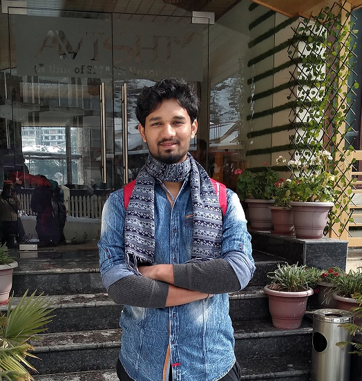

Data Engineering · Infrastructure
Varad Ghodake
I build and run data infrastructure: event streaming, large-scale storage clusters, and the tooling that keeps them reliable. MS Computer Science, Georgia Tech.

About
I'm a Data Engineer at IMC Trading in Chicago, on the team that runs the firm's data infrastructure. Most of my work is on Kafka and large-scale storage, including the pipeline that captures exchange network traffic: keeping large clusters healthy, automating how we build and upgrade them, and writing internal tools that take routine work off the team.
Before IMC, I did a Master's in Computer Science at Georgia Tech and interned as a Production Engineer at Meta, on the feature platform behind Ads machine learning. Before that, I spent two years as a Software Engineer at D. E. Shaw & Co., where I moved incident response onto Kafka and ran a highly available artifact repository.
I studied Computer Engineering at the College of Engineering Pune, where I also wrote software for Swayam, India's first successful student-built satellite.
Experience
Full resume →- 2023 – Present
Data Engineer
IMC Trading · Kafka and storage infrastructure, exchange packet capture pipeline
- 2022
Production Engineering Intern
Meta · Ads Machine Learning, Feature Platform Engineering
- 2019 – 2021
Software Engineer
D. E. Shaw & Co. · Kafka event sourcing, Mesos grid infrastructure, artifact repository at three nines
- 2018
Systems & Operations Engineering Intern
D. E. Shaw & Co. · Ops console that cut SRE repair time by 19%